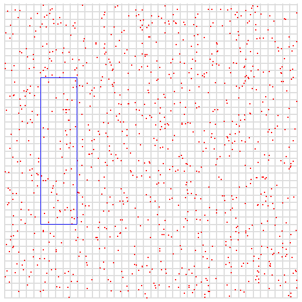

Redis is not exactly a key-value store, since values can be complex data structures. However it has an external key-value shell: at API level data is addressed by the key name. It is fair to say that, natively, Redis only offers primary key access. However since Redis is a data structures server, its capabilities can be used for indexing, in order to create secondary indexes of different kinds, including composite (multi-column) indexes.
This document explains how it is possible to create indexes in Redis using the following data structures:
- Sorted sets to create secondary indexes by ID or other numerical fields.
- Sorted sets with lexicographical ranges for creating more advanced secondary indexes, composite indexes and graph traversal indexes.
- Sets for creating random indexes.
- Lists for creating simple iterable indexes and last N items indexes.
Implementing and maintaining indexes with Redis is an advanced topic, so most users that need to perform complex queries on data should understand if they are better served by a relational store. However often, especially in caching scenarios, there is the explicit need to store indexed data into Redis in order to speedup common queries which require some form of indexing in order to be executed.
Simple numerical indexes with sorted sets⚓︎
The simplest secondary index you can create with Redis is by using the sorted set data type, which is a data structure representing a set of elements ordered by a floating point number which is the score of each element. Elements are ordered from the smallest to the highest score.
Since the score is a double precision float, indexes you can build with vanilla sorted sets are limited to things where the indexing field is a number within a given range.
The two commands to build these kind of indexes are ZADD and
ZRANGE with the BYSCORE argument to respectively add items and retrieve items within a
specified range.
For instance, it is possible to index a set of person names by their age by adding element to a sorted set. The element will be the name of the person and the score will be the age.
ZADD myindex 25 Manuel
ZADD myindex 18 Anna
ZADD myindex 35 Jon
ZADD myindex 67 Helen
In order to retrieve all persons with an age between 20 and 40, the following command can be used:
ZRANGE myindex 20 40 BYSCORE
1) "Manuel"
2) "Jon"
By using the WITHSCORES option of ZRANGE it is also possible
to obtain the scores associated with the returned elements.
The ZCOUNT command can be used in order to retrieve the number of elements
within a given range, without actually fetching the elements, which is also
useful, especially given the fact the operation is executed in logarithmic
time regardless of the size of the range.
Ranges can be inclusive or exclusive, please refer to the ZRANGE
command documentation for more information.
Note: Using the ZRANGE with the BYSCORE and REV arguments, it is possible to query a range in
reversed order, which is often useful when data is indexed in a given
direction (ascending or descending) but we want to retrieve information
the other way around.
Using objects IDs as associated values⚓︎
In the above example we associated names to ages. However in general we may want to index some field of an object which is stored elsewhere. Instead of using the sorted set value directly to store the data associated with the indexed field, it is possible to store just the ID of the object.
For example I may have Redis hashes representing users. Each user is represented by a single key, directly accessible by ID:
HMSET user:1 id 1 username antirez ctime 1444809424 age 38
HMSET user:2 id 2 username maria ctime 1444808132 age 42
HMSET user:3 id 3 username jballard ctime 1443246218 age 33
If I want to create an index in order to query users by their age, I could do:
ZADD user.age.index 38 1
ZADD user.age.index 42 2
ZADD user.age.index 33 3
This time the value associated with the score in the sorted set is the
ID of the object. So once I query the index with ZRANGE with the BYSCORE argument, I'll
also have to retrieve the information I need with HGETALL or similar
commands. The obvious advantage is that objects can change without touching
the index, as long as we don't change the indexed field.
In the next examples we'll almost always use IDs as values associated with the index, since this is usually the more sounding design, with a few exceptions.
Updating simple sorted set indexes⚓︎
Often we index things which change over time. In the above example, the age of the user changes every year. In such a case it would make sense to use the birth date as index instead of the age itself, but there are other cases where we simply want some field to change from time to time, and the index to reflect this change.
The ZADD command makes updating simple indexes a very trivial operation
since re-adding back an element with a different score and the same value
will simply update the score and move the element at the right position,
so if the user antirez turned 39 years old, in order to update the
data in the hash representing the user, and in the index as well, we need
to execute the following two commands:
HSET user:1 age 39
ZADD user.age.index 39 1
The operation may be wrapped in a MULTI/EXEC transaction in order to
make sure both fields are updated or none.
Turning multi dimensional data into linear data⚓︎
Indexes created with sorted sets are able to index only a single numerical value. Because of this you may think it is impossible to index something which has multiple dimensions using this kind of indexes, but actually this is not always true. If you can efficiently represent something multi-dimensional in a linear way, they it is often possible to use a simple sorted set for indexing.
For example the Redis geo indexing API uses a sorted set to index places by latitude and longitude using a technique called Geo hash. The sorted set score represents alternating bits of longitude and latitude, so that we map the linear score of a sorted set to many small squares in the earth surface. By doing an 8+1 style center plus neighborhoods search it is possible to retrieve elements by radius.
Limits of the score⚓︎
Sorted set elements scores are double precision floats. It means that
they can represent different decimal or integer values with different
errors, because they use an exponential representation internally.
However what is interesting for indexing purposes is that the score is
always able to represent without any error numbers between -9007199254740992
and 9007199254740992, which is -/+ 2^53.
When representing much larger numbers, you need a different form of indexing that is able to index numbers at any precision, called a lexicographical index.
Lexicographical indexes⚓︎
Redis sorted sets have an interesting property. When elements are added
with the same score, they are sorted lexicographically, comparing the
strings as binary data with the memcmp() function.
For people that don't know the C language nor the memcmp function, what
it means is that elements with the same score are sorted comparing the
raw values of their bytes, byte after byte. If the first byte is the same,
the second is checked and so forth. If the common prefix of two strings is
the same then the longer string is considered the greater of the two,
so "foobar" is greater than "foo".
There are commands such as ZRANGE and ZLEXCOUNT that
are able to query and count ranges in a lexicographically fashion, assuming
they are used with sorted sets where all the elements have the same score.
This Redis feature is basically equivalent to a b-tree data structure which
is often used in order to implement indexes with traditional databases.
As you can guess, because of this, it is possible to use this Redis data
structure in order to implement pretty fancy indexes.
Before we dive into using lexicographical indexes, let's check how sorted sets behave in this special mode of operation. Since we need to add elements with the same score, we'll always use the special score of zero.
ZADD myindex 0 baaa
ZADD myindex 0 abbb
ZADD myindex 0 aaaa
ZADD myindex 0 bbbb
Fetching all the elements from the sorted set immediately reveals that they are ordered lexicographically.
ZRANGE myindex 0 -1
1) "aaaa"
2) "abbb"
3) "baaa"
4) "bbbb"
Now we can use ZRANGE with the BYLEX argument in order to perform range queries.
ZRANGE myindex [a (b BYLEX
1) "aaaa"
2) "abbb"
Note that in the range queries we prefixed the min and max elements
identifying the range with the special characters [ and (.
This prefixes are mandatory, and they specify if the elements
of the range are inclusive or exclusive. So the range [a (b means give me
all the elements lexicographically between a inclusive and b exclusive,
which are all the elements starting with a.
There are also two more special characters indicating the infinitely negative
string and the infinitely positive string, which are - and +.
ZRANGE myindex [b + BYLEX
1) "baaa"
2) "bbbb"
That's it basically. Let's see how to use these features to build indexes.
A first example: completion⚓︎
An interesting application of indexing is completion. Completion is what happens when you start typing your query into a search engine: the user interface will anticipate what you are likely typing, providing common queries that start with the same characters.
A naive approach to completion is to just add every single query we
get from the user into the index. For example if the user searches banana
we'll just do:
ZADD myindex 0 banana
And so forth for each search query ever encountered. Then when we want to
complete the user input, we execute a range query using ZRANGE with the BYLEX argument.
Imagine the user is typing "bit" inside the search form, and we want to
offer possible search keywords starting for "bit". We send Redis a command
like that:
ZRANGE myindex "[bit" "[bit\xff" BYLEX
Basically we create a range using the string the user is typing right now
as start, and the same string plus a trailing byte set to 255, which is \xff in the example, as the end of the range. This way we get all the strings that start for the string the user is typing.
Note that we don't want too many items returned, so we may use the LIMIT option in order to reduce the number of results.
Adding frequency into the mix⚓︎
The above approach is a bit naive, because all the user searches are the same in this way. In a real system we want to complete strings according to their frequency: very popular searches will be proposed with a higher probability compared to search strings typed very rarely.
In order to implement something which depends on the frequency, and at the same time automatically adapts to future inputs, by purging searches that are no longer popular, we can use a very simple streaming algorithm.
To start, we modify our index in order to store not just the search term,
but also the frequency the term is associated with. So instead of just adding
banana we add banana:1, where 1 is the frequency.
ZADD myindex 0 banana:1
We also need logic in order to increment the index if the search term already exists in the index, so what we'll actually do is something like that:
ZRANGE myindex "[banana:" + BYLEX LIMIT 0 1
1) "banana:1"
This will return the single entry of banana if it exists. Then we
can increment the associated frequency and send the following two
commands:
ZREM myindex 0 banana:1
ZADD myindex 0 banana:2
Note that because it is possible that there are concurrent updates, the above three commands should be send via a Lua script instead, so that the Lua script will atomically get the old count and re-add the item with incremented score.
So the result will be that, every time a user searches for banana we'll
get our entry updated.
There is more: our goal is to just have items searched very frequently. So we need some form of purging. When we actually query the index in order to complete the user input, we may see something like that:
ZRANGE myindex "[banana:" + BYLEX LIMIT 0 10
1) "banana:123"
2) "banaooo:1"
3) "banned user:49"
4) "banning:89"
Apparently nobody searches for "banaooo", for example, but the query was performed a single time, so we end presenting it to the user.
This is what we can do. Out of the returned items, we pick a random one, decrement its score by one, and re-add it with the new score. However if the score reaches 0, we simply remove the item from the list. You can use much more advanced systems, but the idea is that the index in the long run will contain top searches, and if top searches will change over the time it will adapt automatically.
A refinement to this algorithm is to pick entries in the list according to their weight: the higher the score, the less likely entries are picked in order to decrement its score, or evict them.
Normalizing strings for case and accents⚓︎
In the completion examples we always used lowercase strings. However reality is much more complex than that: languages have capitalized names, accents, and so forth.
One simple way do deal with this issues is to actually normalize the string the user searches. Whatever the user searches for "Banana", "BANANA" or "Ba'nana" we may always turn it into "banana".
However sometimes we may like to present the user with the original
item typed, even if we normalize the string for indexing. In order to
do this, what we do is to change the format of the index so that instead
of just storing term:frequency we store normalized:frequency:original
like in the following example:
ZADD myindex 0 banana:273:Banana
Basically we add another field that we'll extract and use only for visualization. Ranges will always be computed using the normalized strings instead. This is a common trick which has multiple applications.
Adding auxiliary information in the index⚓︎
When using a sorted set in a direct way, we have two different attributes for each object: the score, which we use as an index, and an associated value. When using lexicographical indexes instead, the score is always set to 0 and basically not used at all. We are left with a single string, which is the element itself.
Like we did in the previous completion examples, we are still able to store associated data using separators. For example we used the colon in order to add the frequency and the original word for completion.
In general we can add any kind of associated value to our indexing key.
In order to use a lexicographical index to implement a simple key-value store
we just store the entry as key:value:
ZADD myindex 0 mykey:myvalue
And search for the key with:
ZRANGE myindex [mykey: + BYLEX LIMIT 0 1
1) "mykey:myvalue"
Then we extract the part after the colon to retrieve the value. However a problem to solve in this case is collisions. The colon character may be part of the key itself, so it must be chosen in order to never collide with the key we add.
Since lexicographical ranges in Redis are binary safe you can use any byte or any sequence of bytes. However if you receive untrusted user input, it is better to use some form of escaping in order to guarantee that the separator will never happen to be part of the key.
For example if you use two null bytes as separator "\0\0", you may
want to always escape null bytes into two bytes sequences in your strings.
Numerical padding⚓︎
Lexicographical indexes may look like good only when the problem at hand is to index strings. Actually it is very simple to use this kind of index in order to perform indexing of arbitrary precision numbers.
In the ASCII character set, digits appear in the order from 0 to 9, so if we left-pad numbers with leading zeroes, the result is that comparing them as strings will order them by their numerical value.
ZADD myindex 0 00324823481:foo
ZADD myindex 0 12838349234:bar
ZADD myindex 0 00000000111:zap
ZRANGE myindex 0 -1
1) "00000000111:zap"
2) "00324823481:foo"
3) "12838349234:bar"
We effectively created an index using a numerical field which can be as big as we want. This also works with floating point numbers of any precision by making sure we left pad the numerical part with leading zeroes and the decimal part with trailing zeroes like in the following list of numbers:
01000000000000.11000000000000
01000000000000.02200000000000
00000002121241.34893482930000
00999999999999.00000000000000
Using numbers in binary form⚓︎
Storing numbers in decimal may use too much memory. An alternative approach
is just to store numbers, for example 128 bit integers, directly in their
binary form. However for this to work, you need to store the numbers in
big endian format, so that the most significant bytes are stored before
the least significant bytes. This way when Redis compares the strings with
memcmp(), it will effectively sort the numbers by their value.
Keep in mind that data stored in binary format is less observable for debugging, harder to parse and export. So it is definitely a trade off.
Composite indexes⚓︎
So far we explored ways to index single fields. However we all know that SQL stores are able to create indexes using multiple fields. For example I may index products in a very large store by room number and price.
I need to run queries in order to retrieve all the products in a given room having a given price range. What I can do is to index each product in the following way:
ZADD myindex 0 0056:0028.44:90
ZADD myindex 0 0034:0011.00:832
Here the fields are room:price:product_id. I used just four digits padding
in the example for simplicity. The auxiliary data (the product ID) does not
need any padding.
With an index like that, to get all the products in room 56 having a price between 10 and 30 dollars is very easy. We can just run the following command:
ZRANGE myindex [0056:0010.00 [0056:0030.00 BYLEX
The above is called a composed index. Its effectiveness depends on the order of the fields and the queries I want to run. For example the above index cannot be used efficiently in order to get all the products having a specific price range regardless of the room number. However I can use the primary key in order to run queries regardless of the price, like give me all the products in room 44.
Composite indexes are very powerful, and are used in traditional stores in order to optimize complex queries. In Redis they could be useful both to implement a very fast in-memory Redis index of something stored into a traditional data store, or in order to directly index Redis data.
Updating lexicographical indexes⚓︎
The value of the index in a lexicographical index can get pretty fancy and hard or slow to rebuild from what we store about the object. So one approach to simplify the handling of the index, at the cost of using more memory, is to also take alongside to the sorted set representing the index a hash mapping the object ID to the current index value.
So for example, when we index we also add to a hash:
MULTI
ZADD myindex 0 0056:0028.44:90
HSET index.content 90 0056:0028.44:90
EXEC
This is not always needed, but simplifies the operations of updating
the index. In order to remove the old information we indexed for the object
ID 90, regardless of the current fields values of the object, we just
have to retrieve the hash value by object ID and ZREM it in the sorted
set view.
Representing and querying graphs using a hexastore⚓︎
One cool thing about composite indexes is that they are handy in order to represent graphs, using a data structure which is called Hexastore.
The hexastore provides a representation for relations between objects, formed by a subject, a predicate and an object. A simple relation between objects could be:
antirez is-friend-of matteocollina
In order to represent this relation I can store the following element in my lexicographical index:
ZADD myindex 0 spo:antirez:is-friend-of:matteocollina
Note that I prefixed my item with the string spo. It means that the item represents a subject,predicate,object relation.
In can add 5 more entries for the same relation, but in a different order:
ZADD myindex 0 sop:antirez:matteocollina:is-friend-of
ZADD myindex 0 ops:matteocollina:is-friend-of:antirez
ZADD myindex 0 osp:matteocollina:antirez:is-friend-of
ZADD myindex 0 pso:is-friend-of:antirez:matteocollina
ZADD myindex 0 pos:is-friend-of:matteocollina:antirez
Now things start to be interesting, and I can query the graph in many
different ways. For example, who are all the people antirez
is friend of?
ZRANGE myindex "[spo:antirez:is-friend-of:" "[spo:antirez:is-friend-of:\xff" BYLEX
1) "spo:antirez:is-friend-of:matteocollina"
2) "spo:antirez:is-friend-of:wonderwoman"
3) "spo:antirez:is-friend-of:spiderman"
Or, what are all the relationships antirez and matteocollina have where
the first is the subject and the second is the object?
ZRANGE myindex "[sop:antirez:matteocollina:" "[sop:antirez:matteocollina:\xff" BYLEX
1) "sop:antirez:matteocollina:is-friend-of"
2) "sop:antirez:matteocollina:was-at-conference-with"
3) "sop:antirez:matteocollina:talked-with"
By combining different queries, I can ask fancy questions. For example:
Who are all my friends that, like beer, live in Barcelona, and matteocollina consider friends as well?
To get this information I start with an spo query to find all the people
I'm friend with. Then for each result I get I perform an spo query
to check if they like beer, removing the ones for which I can't find
this relation. I do it again to filter by city. Finally I perform an ops
query to find, of the list I obtained, who is considered friend by
matteocollina.
Make sure to check Matteo Collina's slides about Levelgraph in order to better understand these ideas.
Multi dimensional indexes⚓︎
A more complex type of index is an index that allows you to perform queries where two or more variables are queried at the same time for specific ranges. For example I may have a data set representing persons age and salary, and I want to retrieve all the people between 50 and 55 years old having a salary between 70000 and 85000.
This query may be performed with a multi column index, but this requires us to select the first variable and then scan the second, which means we may do a lot more work than needed. It is possible to perform these kinds of queries involving multiple variables using different data structures. For example, multi-dimensional trees such as k-d trees or r-trees are sometimes used. Here we'll describe a different way to index data into multiple dimensions, using a representation trick that allows us to perform the query in a very efficient way using Redis lexicographical ranges.
Let's say we have points in the space, which represent our data samples, where x and y are our coordinates. The max value of both variables is 400.
In the next figure, the blue box represents our query. We want all the points where x is between 50 and 100, and where y is between 100 and 300.

In order to represent data that makes these kinds of queries fast to perform, we start by padding our numbers with 0. So for example imagine we want to add the point 10,25 (x,y) to our index. Given that the maximum range in the example is 400 we can just pad to three digits, so we obtain:
x = 010
y = 025
Now what we do is to interleave the digits, taking the leftmost digit in x, and the leftmost digit in y, and so forth, in order to create a single number:
001205
This is our index, however in order to more easily reconstruct the original representation, if we want (at the cost of space), we may also add the original values as additional columns:
001205:10:25
Now, let's reason about this representation and why it is useful in the
context of range queries. For example let's take the center of our blue
box, which is at x=75 and y=200. We can encode this number as we did
earlier by interleaving the digits, obtaining:
027050
What happens if we substitute the last two digits respectively with 00 and 99? We obtain a range which is lexicographically continuous:
027000 to 027099
What this maps to is to a square representing all values where the x
variable is between 70 and 79, and the y variable is between 200 and 209.
To identify this specific area, we can write random points in that interval.

So the above lexicographic query allows us to easily query for points in a specific square in the picture. However the square may be too small for the box we are searching, so that too many queries are needed. So we can do the same but instead of replacing the last two digits with 00 and 99, we can do it for the last four digits, obtaining the following range:
020000 029999
This time the range represents all the points where x is between 0 and 99
and y is between 200 and 299. Drawing random points in this interval
shows us this larger area.

So now our area is too big for our query, and still our search box is not completely included. We need more granularity, but we can easily obtain it by representing our numbers in binary form. This time, when we replace digits instead of getting squares which are ten times bigger, we get squares which are just two times bigger.
Our numbers in binary form, assuming we need just 9 bits for each variable (in order to represent numbers up to 400 in value) would be:
x = 75 -> 001001011
y = 200 -> 011001000
So by interleaving digits, our representation in the index would be:
000111000011001010:75:200
Let's see what are our ranges as we substitute the last 2, 4, 6, 8, ... bits with 0s ad 1s in the interleaved representation:
2 bits: x between 74 and 75, y between 200 and 201 (range=2)
4 bits: x between 72 and 75, y between 200 and 203 (range=4)
6 bits: x between 72 and 79, y between 200 and 207 (range=8)
8 bits: x between 64 and 79, y between 192 and 207 (range=16)
And so forth. Now we have definitely better granularity!
As you can see substituting N bits from the index gives us
search boxes of side 2^(N/2).
So what we do is check the dimension where our search box is smaller, and check the nearest power of two to this number. Our search box was 50,100 to 100,300, so it has a width of 50 and a height of 200. We take the smaller of the two, 50, and check the nearest power of two which is 64. 64 is 2^6, so we would work with indexes obtained replacing the latest 12 bits from the interleaved representation (so that we end replacing just 6 bits of each variable).
However single squares may not cover all our search, so we may need more. What we do is to start with the left bottom corner of our search box, which is 50,100, and find the first range by substituting the last 6 bits in each number with 0. Then we do the same with the right top corner.
With two trivial nested for loops where we increment only the significant bits, we can find all the squares between these two. For each square we convert the two numbers into our interleaved representation, and create the range using the converted representation as our start, and the same representation but with the latest 12 bits turned on as end range.
For each square found we perform our query and get the elements inside, removing the elements which are outside our search box.
Turning this into code is simple. Here is a Ruby example:
def spacequery(x0,y0,x1,y1,exp)
bits=exp*2
x_start = x0/(2**exp)
x_end = x1/(2**exp)
y_start = y0/(2**exp)
y_end = y1/(2**exp)
(x_start..x_end).each{|x|
(y_start..y_end).each{|y|
x_range_start = x*(2**exp)
x_range_end = x_range_start | ((2**exp)-1)
y_range_start = y*(2**exp)
y_range_end = y_range_start | ((2**exp)-1)
puts "#{x},#{y} x from #{x_range_start} to #{x_range_end}, y from #{y_range_start} to #{y_range_end}"
# Turn it into interleaved form for ZRANGE query.
# We assume we need 9 bits for each integer, so the final
# interleaved representation will be 18 bits.
xbin = x_range_start.to_s(2).rjust(9,'0')
ybin = y_range_start.to_s(2).rjust(9,'0')
s = xbin.split("").zip(ybin.split("")).flatten.compact.join("")
# Now that we have the start of the range, calculate the end
# by replacing the specified number of bits from 0 to 1.
e = s[0..-(bits+1)]+("1"*bits)
puts "ZRANGE myindex [#{s} [#{e} BYLEX"
}
}
end
spacequery(50,100,100,300,6)
While non immediately trivial this is a very useful indexing strategy that in the future may be implemented in Redis in a native way. For now, the good thing is that the complexity may be easily encapsulated inside a library that can be used in order to perform indexing and queries. One example of such library is Redimension, a proof of concept Ruby library which indexes N-dimensional data inside Redis using the technique described here.
Multi dimensional indexes with negative or floating point numbers⚓︎
The simplest way to represent negative values is just to work with unsigned integers and represent them using an offset, so that when you index, before translating numbers in the indexed representation, you add the absolute value of your smaller negative integer.
For floating point numbers, the simplest approach is probably to convert them to integers by multiplying the integer for a power of ten proportional to the number of digits after the dot you want to retain.
Non range indexes⚓︎
So far we checked indexes which are useful to query by range or by single item. However other Redis data structures such as Sets or Lists can be used in order to build other kind of indexes. They are very commonly used but maybe we don't always realize they are actually a form of indexing.
For instance I can index object IDs into a Set data type in order to use
the get random elements operation via SRANDMEMBER in order to retrieve
a set of random objects. Sets can also be used to check for existence when
all I need is to test if a given item exists or not or has a single boolean
property or not.
Similarly lists can be used in order to index items into a fixed order.
I can add all my items into a Redis list and rotate the list with
RPOPLPUSH using the same key name as source and destination. This is useful
when I want to process a given set of items again and again forever in the
same order. Think of an RSS feed system that needs to refresh the local copy
periodically.
Another popular index often used with Redis is a capped list, where items
are added with LPUSH and trimmed with LTRIM, in order to create a view
with just the latest N items encountered, in the same order they were
seen.
Index inconsistency⚓︎
Keeping the index updated may be challenging, in the course of months or years it is possible that inconsistencies are added because of software bugs, network partitions or other events.
Different strategies could be used. If the index data is outside Redis
read repair can be a solution, where data is fixed in a lazy way when
it is requested. When we index data which is stored in Redis itself
the SCAN family of commands can be used in order to verify, update or
rebuild the index from scratch, incrementally.
创建日期: November 25, 2023